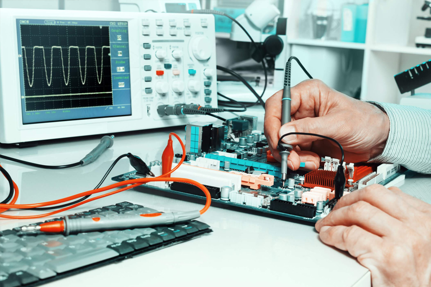

Redução de Custos
A manutenção preventiva evita falhas inesperadas, prolonga a vida útil dos equipamentos, reduz gastos com reparos emergenciais e minimiza interrupções, otimizando os custos do hospital.
Manutenção Planejada e Recorrente
A manutenção planejada e recorrente previne falhas, reduz custos com reparos emergenciais, aumenta a durabilidade dos equipamentos e garante operação contínua, evitando prejuízos financeiros.

Nossos profissionais
Nossos técnicos especializados realizam manutenção planejada e preventiva em equipamentos hospitalares, garantindo segurança, eficiência e maior durabilidade dos equipamentos essenciais ao seu negócio.